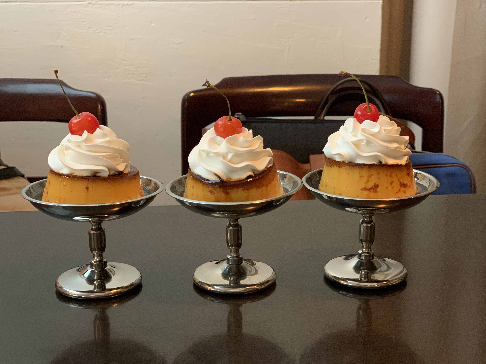
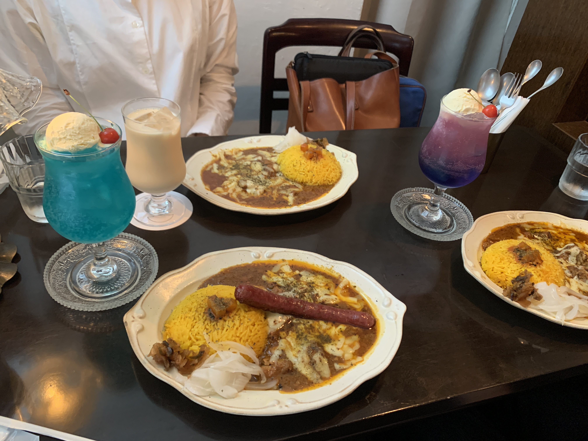
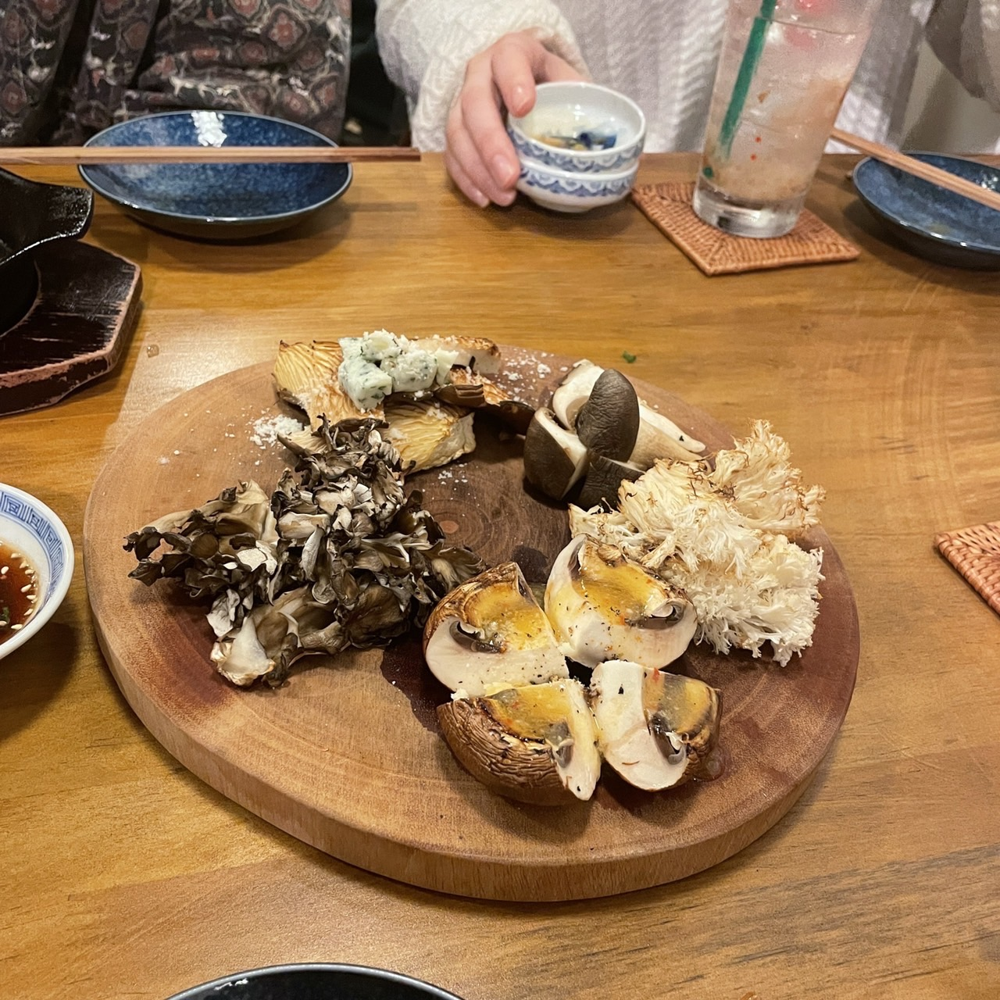
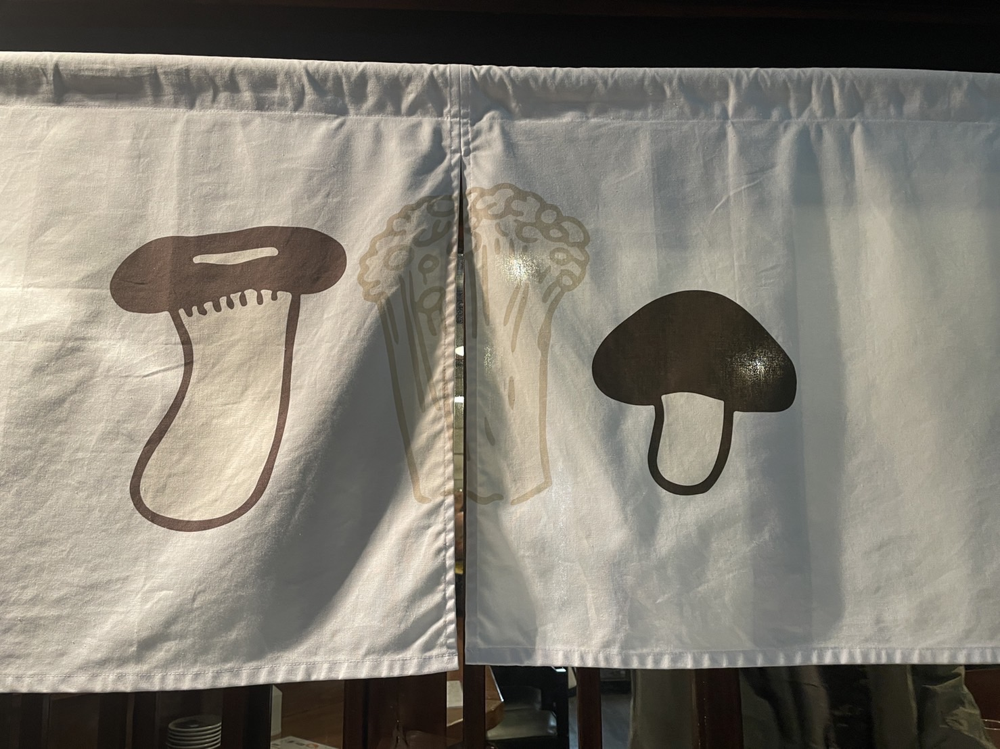
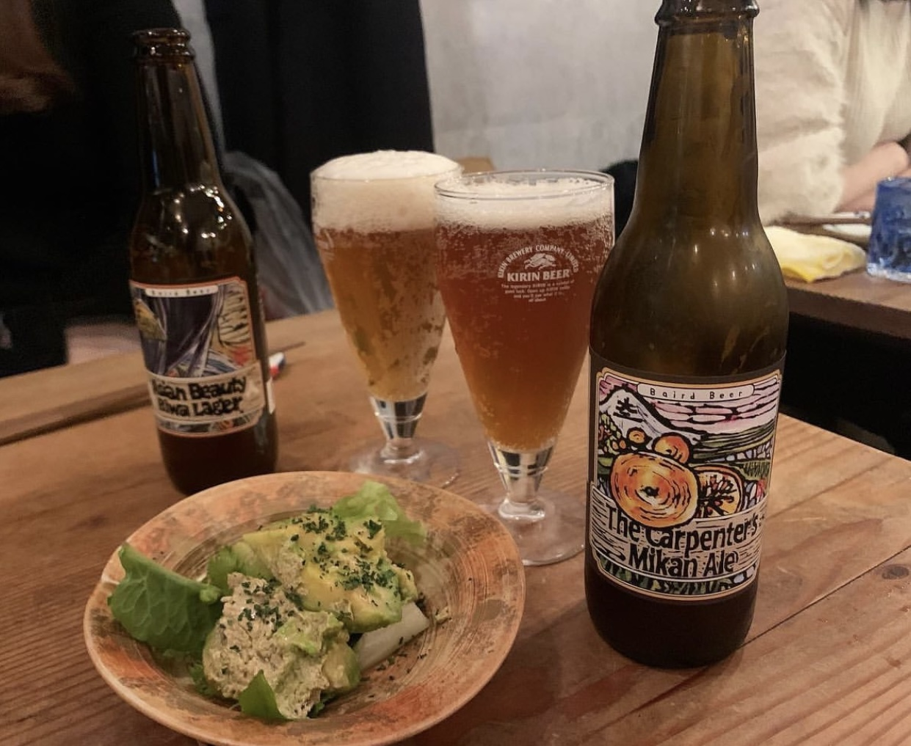
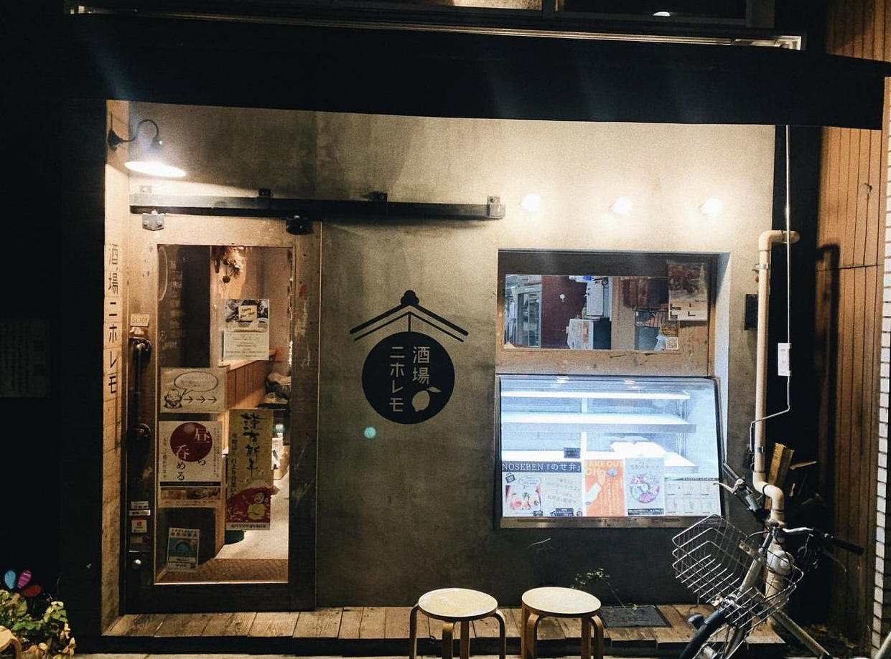
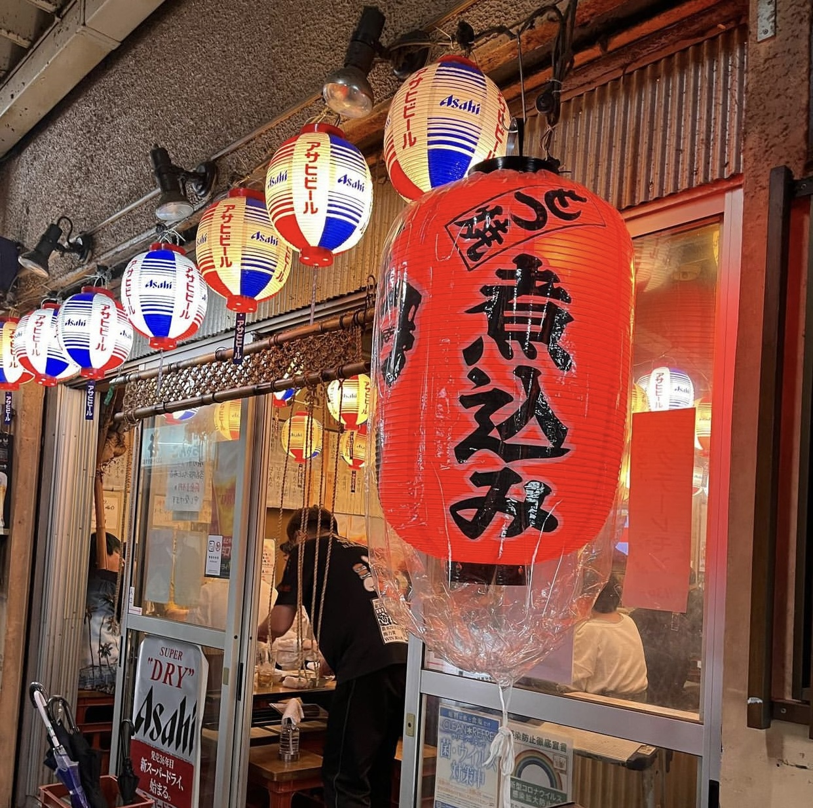

高円寺周辺のお店
DESSERT
旅する喫茶
- 高円寺駅より徒歩3分
- 営業時間 : 12:00-20:00
- 定休日 : 月曜日
- 程よくスパイシーなカレーと種類豊富で素敵な名前のクリームソーダが人気のお店。来店日は雨が降っていたので雨の日限定のクリームソーダを注文。カレーには欲張ってチーズとシカ肉のソーセージをトッピング、食後にプリンまで頂きました。雰囲気も良く、インスタ映えする料理で満たされました。
- 旅する喫茶ホームページ


DINNER
きのことおさけ
- 高円寺駅より徒歩4分
- 営業時間 : 17:00-24:00
- 定休日 : 火曜日
- 多彩なきのこ料理とお酒が楽しめるおしゃれな飲み屋さん。店内は少なめの席数で落ち着いた雰囲気。きのこのお刺身などの珍しいきのこ料理やきのこを使ったお酒のメニューが豊富でエンタメ性も◎
- きのことおさけインスタグラム


酒場ニホレモ
- 高円寺駅より徒歩5分
- 営業時間 : 11:00-23:00
- 定休日 : 無し
- 路地裏にひっそりと営業している隠れ家的居酒屋。レモンサワーの種類が豊富で、一品料理のおつまみも絶品揃い。いぶりがっこクリームチーズは追加注文したほどで、忘れられないおいしさ。
- 酒場ニホレモホームページ


馬力
- 高円寺駅より徒歩3分
- 営業時間 : 15:30-28:00
- 定休日 : 無し
- 二件目にぴったりの安くておいしい大衆居酒屋。馬力豆腐は毎回注文する定番メニュー。全席喫煙可能なので喫煙者には特におすすめ。初めて行ったときにお笑い芸人さんに会えたので、高円寺の中でも比較的芸人さんに遭遇しやすいかも？(笑)

ホームに戻る